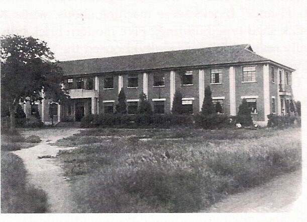
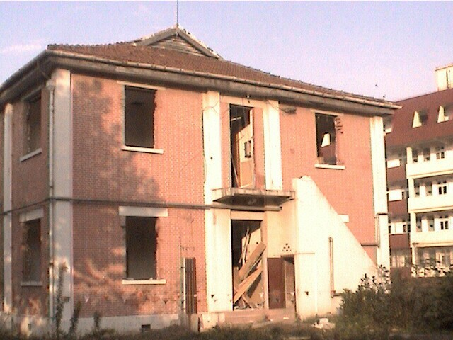
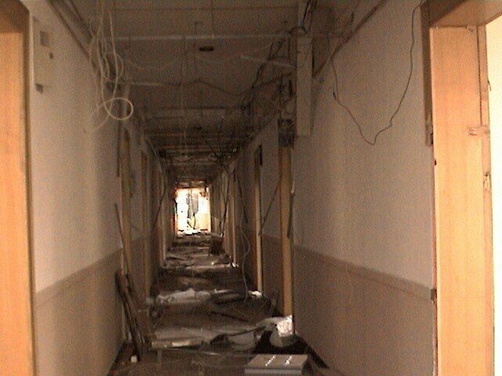

You are now in front of the SHSID swimming pool. Until it
was torn down in 2009 this was the site of G Block, a two story brick
building that served as a billet for internee families with
children. This was the home of J.G. Ballard, the author of Empire
of the Sun, and Betty Barr, whose camp stories you can find on the home
menu.


